-
Personal Blog
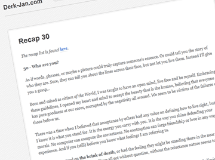personal site blog
My personal blog. I write about the scary stuff, the happy stuff, the painful stuff, mixed with reblogs and links of and to stuff that inspires me. Updated monthly. Or less.
-
Programming Life: Gigabase
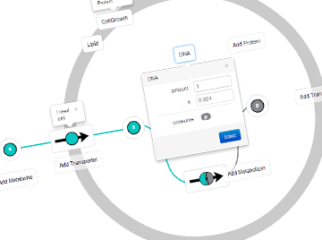university project product CoffeeScript Ruby Ruby on Rails SASS HTML5
Synthetic Biologists deal with simulating cellular processes. What if there was a tool, a visual aid to create the models to run this simulation? An application that can turn struggling with a complex system of Ordinary Differential Equations into a point and click process. A piece of software that would tell the biologist that there is something missing on his palette, that the values are incorrect or that he is forgetting a crucial component. If simulating does not incorporate entering equations and does not involve “turning it off and on again”...
Gigabase: a webapplication that turns the ODE’s into clickable objects to enable Cross Browser & Platform, on- and offline, creation of cells. The costs of sequencing a string of DNA is getting lower and lower, but it is still expensive. Use this app to test the viability of the expected results without spending a dime.
-
CoffeeScript 1945
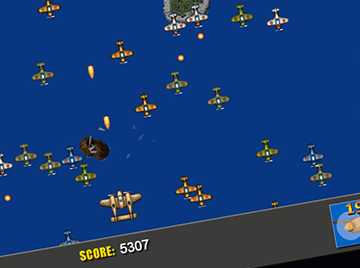personal project game prototype CoffeeScript Canvas HTML5
CoffeScript-1945 is a canvas incarnation of the 194X series. Shoot 'm Up and is playable in all modern browsers. Graphics by Ari Feldman.
-
RescueTime PHP API
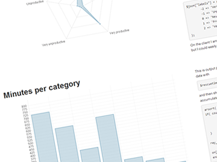personal project service API PHP CoffeeScript JavaScript RescueTime
Rescuetime keeps track of your computer usuage. The PHP + JS API allows you to load data and create your own visualisations. It is completely open source. You could use this API to build your own hub of data visualisation. Or to show your boss you are working on his project. Or to show your blog readers or vlog watchers how much time you spend on them. Keep collecting data.
-
Play With Your Peas Prototype
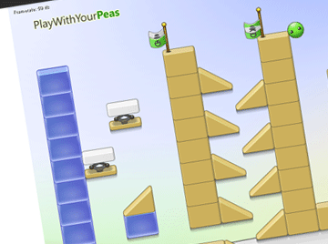personal project game prototype C# Silverlight XNA Facebook
Play With Your Peas prototype challenge. This challenge was created by Daniel Cook. These are my results. You can play the prototype online, download the source and follow its development. The game features peas who think they are ninjas and therefore try to climb to the highest possible locations in the world your build, after which they jump down. Score some happy points!
-
Project ERA
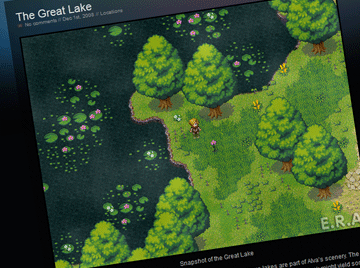personal project game C# NoSQL Multiplayer XNA HLSL
Project ERA (Epos of Realms and Alliances) is derived from Solarsoft's online game development. This online multiplayer role playing game is a collaboration project over the last few years and is bound the be great! It has grown to be a tech demo to show what is possible with today's 2D technology, networking and Computer Sciene skills.
-
Fluffy and the Gang (not available yet)
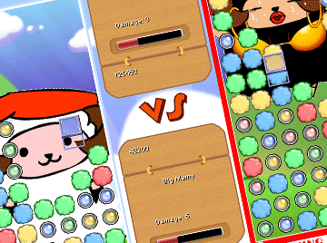personal project game C# Arcade XNA AI Ruby
Fluffy and the Gang features a sheep called Fluffy and his friends who join the Shuffle Puzzle Tournament to make their dreams come true. The game was first created using Ruby Game Scripting System (RGSS) and is now being ported and recreated for XNA. The game features both single and multiplayer modes for all your fluffy fun.
-
Perfect Pong
university project game C# Arcade XNA AI HLSL
Perfect Pong is an incarnation of pong as a practical assignment to one of my courses. The game was created in 5 afternoons and lacks any testing or fine-tuning whatsoever. The source is available and a publish of this XNA game can be found by clicking the button below.
-
Time Tetris
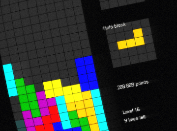university project game C# Arcade XNA HLSL
Time Tetris is an incarnation of tetris as a practical assignment to one of my courses. The game was created in 5 afternoons and lacks any testing or fine-tuning whatsoever. The source is available and a publish of this XNA game can be found by clicking the button below.
-
Build a watch (work in progress)
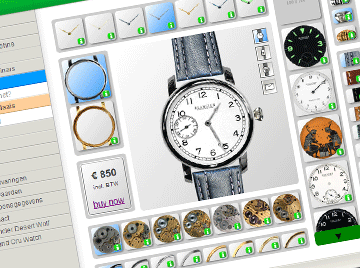freelance project web application HTML5 Less CSS3 Responsive 960-grid Bootstrap
This app allows you to design your own watch and order it. A high-tech next-gen printer will draw any image on the plate you chose, after which a qualified watchmaker will assemble your unique one-of-a-kind piece. This web application is still in production.
-
Project Life Insights (not available yet)
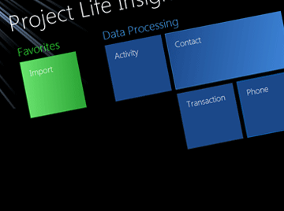personal project application C# Mongo Telerik Reporting
Project Life Insights gives me more insight in my life (and when I release the source also in the lives of other people). It can currently process all calls made by a mobile phone, all text messages, all transactions from Paypal, ING and Rabobank and registers the time each program is active. Inspired by rescuetime.com this application shows me where I travel, where my money goes and how I spent my time.
-
Natuur & Milieu Administrative Program
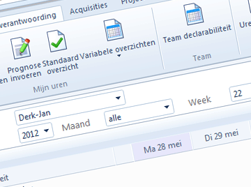work project application C# ASP.NET Telerik Project Management
Together with two other software engineers we built a complete administrative program to suit the needs of a company with more than 50 employees. The application contains time registration, project management, customer relations database and more.
-
Yearbook Gynasium Haganum
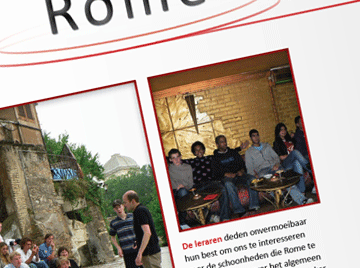personal project printworks Photoshop Indesign
During the period between the finals and the results I designed and edited 208 pages to my senior class yearbook. It featured over 100 personal pages, a lot of party pictures, a log of all the travelling we did, some teacher stories and much more.

Derk-Jan.com
Still a random idiot
I like to make stuff. Check some of it out below or on my GitHub.